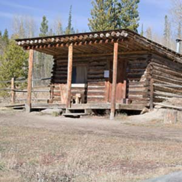
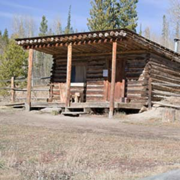
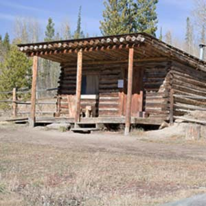

Cabin Clusters are a new form of land development specifically designed for mountain resort communities.
This model emphasizes community and encourages interaction between neighbors without losing the sense of privacy afforded by individual cabins sparsely populating a forest. Each cluster can accommodate up to 40 guests comfortably or 48 guests maximum depending on cabin availability.
Clusters are designed with flexibility in mind. A large family for a reunion or company gathering may rent out an entire cluster for themselves or a specific number of cabins. Anyone can rent a single cabin if needed, but larger groups of people should take priority due to its design.
how it works
Circulation
Cluster design uses an inward focus. The ring road surrounding a cluster gives easy access to vehicles to the cluster, but never within one to provide safety to guests. Building orientation favors sunlight while warmly greeting visitors without turning its back to the road.
Building Relationship
The community building, or common building, closes the ring to the north. All cabins share its amenities similar to co-housing. Solar orientation gives it the needed warmth in winter and avoids shadowing nearby cabins.
Shared Open Space
At the center of the ring is a shared park space complete with firepit, tables and a large, green space, perfect for outdoor events. The ring design keeps people accountable and encourages taking care of their personal, central space.
context
responding to authenticity
Design should take inspiration from its context. For a new form to fit in place, responding to the surrounding land forms and designs are an answer. Colors, shapes, techniques, and designs are all influenced by the surrounding community of Snow Mountain Ranch and Granby, Colorado.

cabin
small scale—cabin
Cabins reflect the forms of existing cabins with an updated take on design. Because the cabins are on a hill, the roof line hangs lower to the ground to look as if the building is hugging the ground. Small stone pedestals anchor columns holding the roof and truss as a reference to the older homesteads.
Designed in mind for a family, a fully ADA-accessible design takes into account of the small details from modern homes in a small cabin setting. Leading from the outdoor patio and picnic table, the kitchen and bench with coat rack gives a short pause to a vaulted great room meant for spending time together. A full bath and two bedrooms to the back finish the layout.
common building
small scale—common building
The community building is a focal point to the cluster without it overwhelming the cabins and open space. The truss at the face of the building serves as both decoration and showing the construction of the building.
This is the area for main indoor events, if not just a place for people to spend time together. With an open deck, outdoor fireplace, and large vaulted interior, the space is flexible for any use. Storage for media equipment and other necessary items opens the possibility for all event-types.


 
